Reportage Indoor Dieppe/Belleville 2006

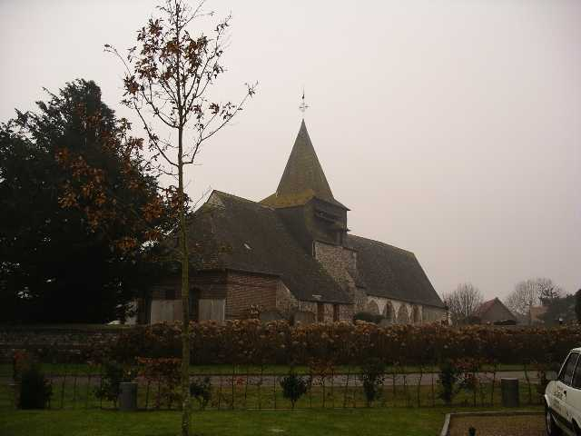

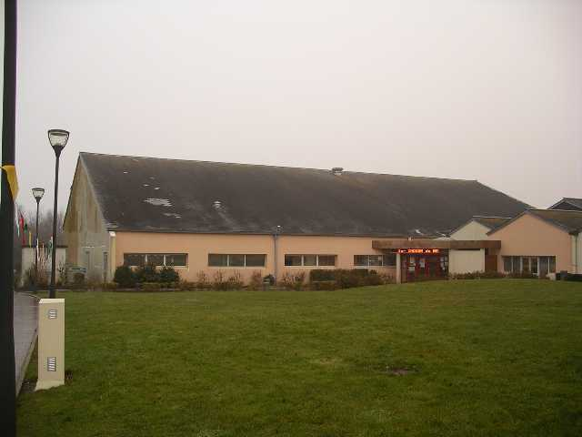
Belleville sur Mer est un petit bourg au nord-est de Dieppe... Il a une jolie église, mais ce qui nous intéresse surtout, un grand gymnase. Chose rare, l'indoor couvre 2 jours, avec même vol de nuit outdoor pour les fanas.

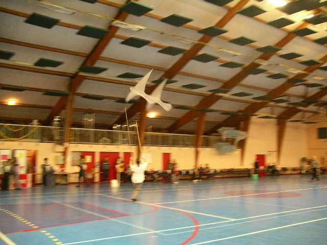
Le gymnase est moderne et grand avec des annexes intéressantes comme la salle à manger... Malheureusement, ils ont mis du plastique noir sur toutes les verrières ce qui est un peu triste et ne facilite pas la tâche du photographe...

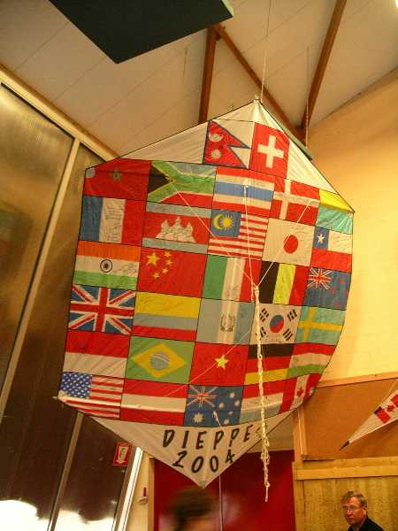
La déco cervolistique comprend entre autres le grand Rokkaku de Dieppe signé par toutes (enfin, beaucoup) les délégations.

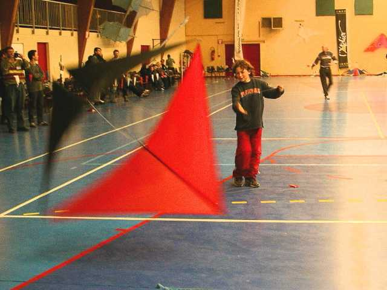
Ce jeune homme fait voler le Pfalz (nom non garanti) qui marche pas mal en indoor avec sa bonne surface de voile. Ils en construiront un deuxième en direct pendant le week-end.

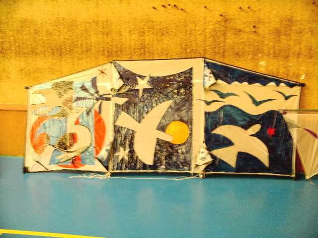
Dans la déco, cerf-volant peint façon Matisse...

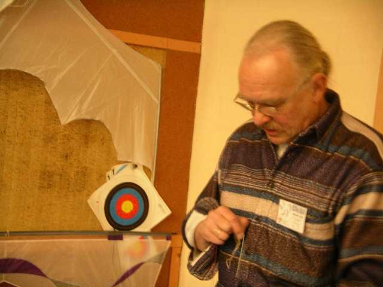
Michel Chantren nous est venu de Belgique, maintenant avec sa copine (juste une copine) qui l'aide à présenter son show... Il est toujours aussi bon aux commandes de son révo.

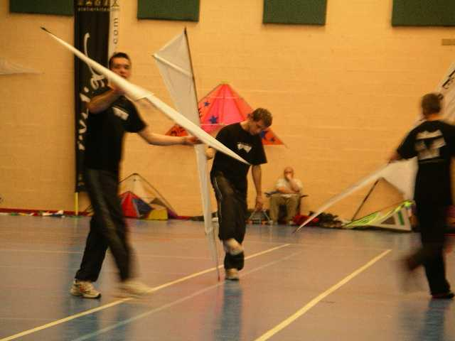
Damien, Fabrice et Jeremy ont monté un team avec uniformes et tout, et présentent un show assez bluffant, avec leurs révos finis chez Jean-Claude à 5 heures du mat' ! Manque plus que la déco, mais pour l'indoor, ça alourdit !

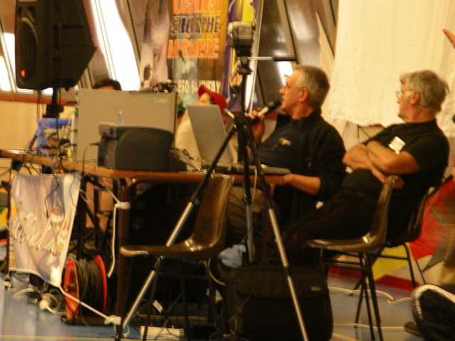
Eric, un des GOs, officie au dispatching et au micro. Faudra trouver un speaker, Eric, tu peux pas tout faire !

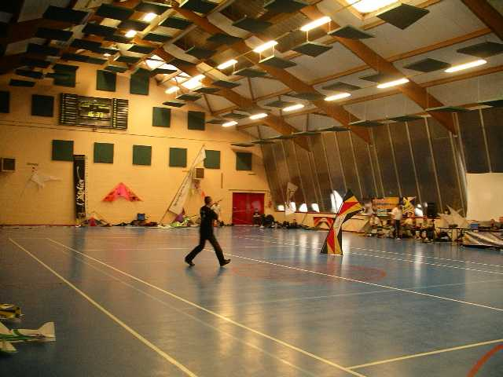
Fabrice, bien qu'ayant peu dormi, se démène toujours comme un beau diable sur le terrain...

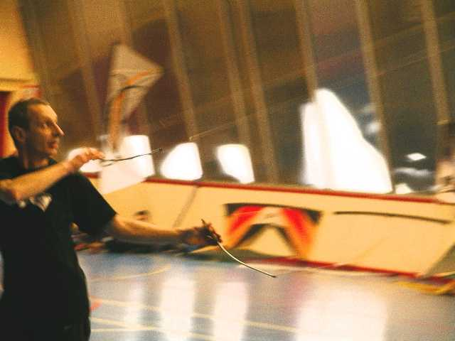
Et il invente toujours de nouvelles figures...

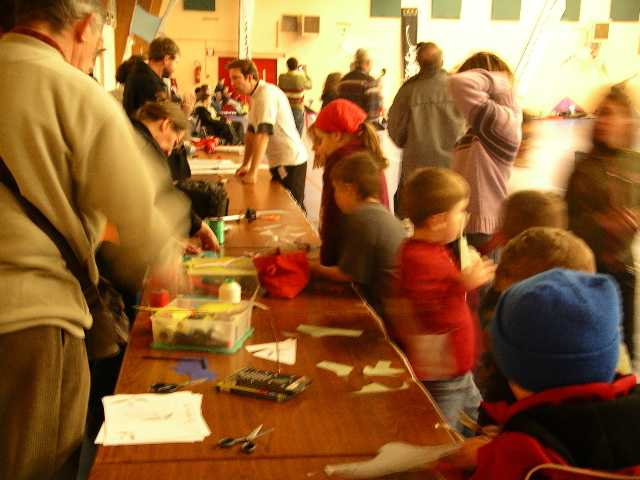
Un atelier pour les enfants a été monté, pour faire des petits CVs en papier ou calque découpé et ficelé en haut d'une baguette. Vol moyen, en général, souvent tourbillonnant mais ça plaît beaucoup aux enfants...

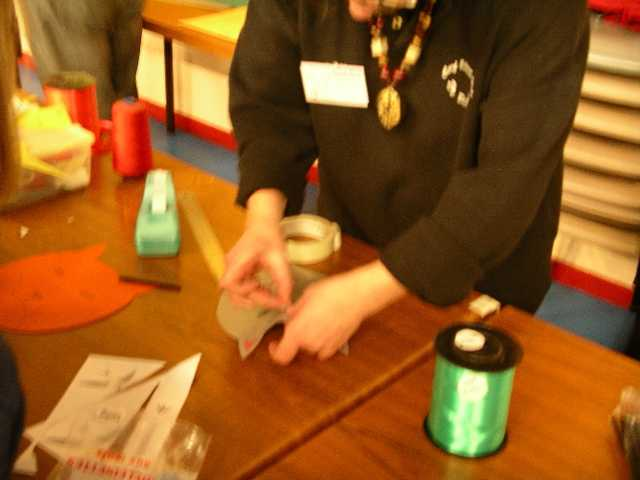
Madame au bridage d'un chat...

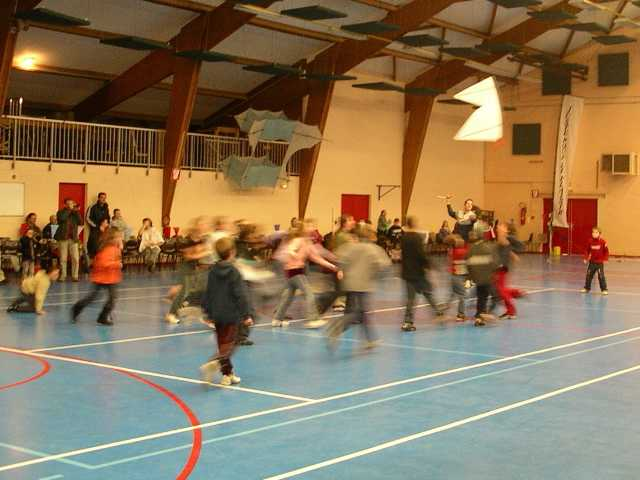
Animation encore pour les enfants qui essayent d'attraper un chiffon rouge à la corne du révo de Damien. Ca se bouscule sur le terrain ! On finit par jeter les bonbons à poignées à la main !

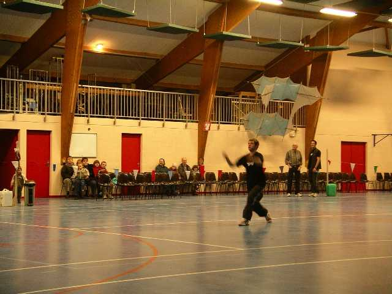
Mais compète, compète ! On a abandonné les "imposées" trop barbantes. A la place, on fait ballet-surprise sur une musique imposée inconnue au départ...

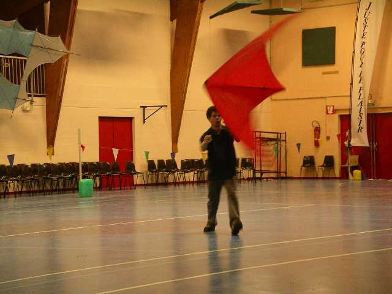
Les concurrents se succèdent.

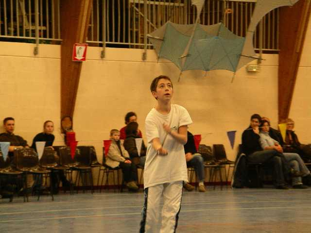
Et la relève est là, dans ce domaine du cerf-volant ! Oh, les GOs : vous devriez faire une compète de monofils (sans canne à pêche), comme on n'est pas nombreux, j'aurais peut-être un prix !

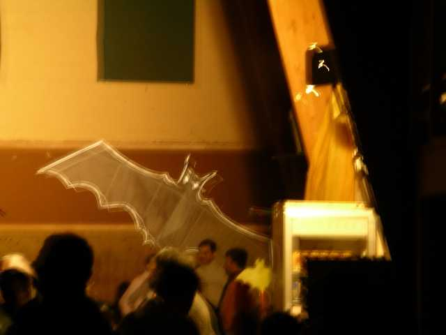
A 18 h, show dans le noir, à la lumière des projecteurs... Génial... de l'émotion, de l'esthétique, des inventions, tout ça très varié, une excellente idée, à copier ! Mais évidemment, il est préférable d'avoir une rencontre de 2 jours comme ici pour avoir le temps...

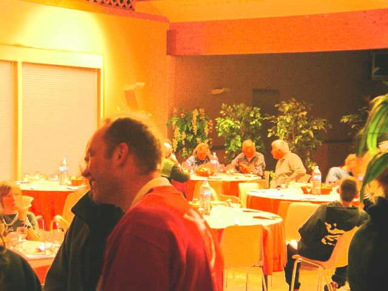
Le soir, repas offert dans la grande salle à manger bien chauffée avec apéritif et service à table. Vraiment bien, ce gymnase !

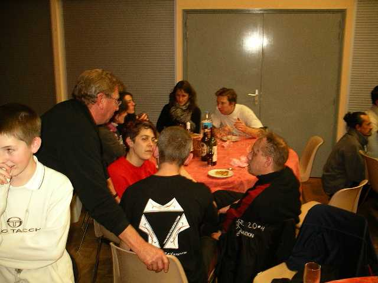
L'équipe du festival de Dieppe est venue rendre visite et prendre la température, bien chaude à cette heure, et ça discute ferme...

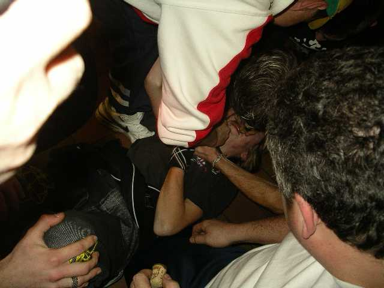
L'ambiance monte, après le repas. D'abord, on se jette les bouchons, puis quelqu'un se dit que le bouchon brûlé ça noircit bien ! Les victimes ne se compteront pas !

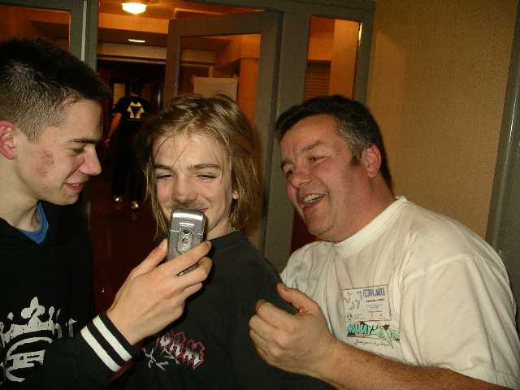
On constate les dégâts ; bien utile la photo numérique, ça sert de miroir !

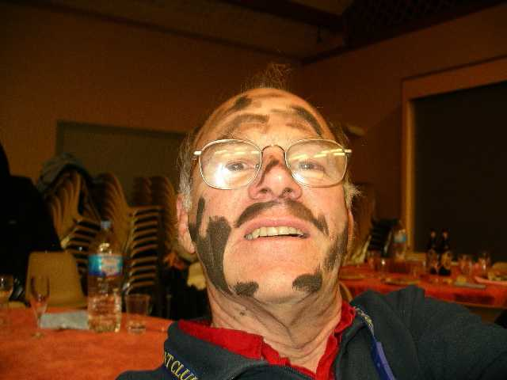
Tout le monde est exposé à un raid inattendu...
Le soir, dodo. Mais le camping-car, c'est bien froid et le gymnase est bien chauffé. Et il y a plein de matelas de mousse : le dortoir est vite improvisé.

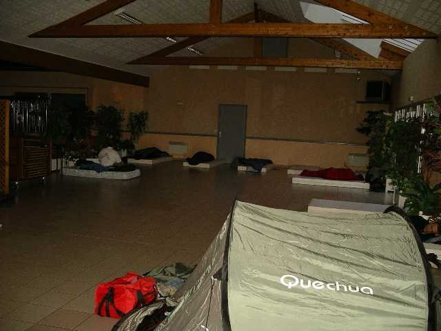
Mais certains n'en profiteront que très tard, voire tôt le matin, après avoir volé encore, après le vol de nuit outdoor, et avec des carburants divers et prohibés...

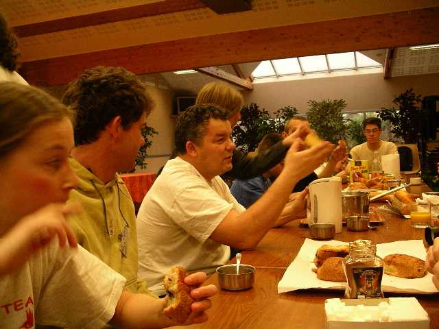
Le matin, du coup, petites difficultés à se lever et figure un peu marquée pour certains !

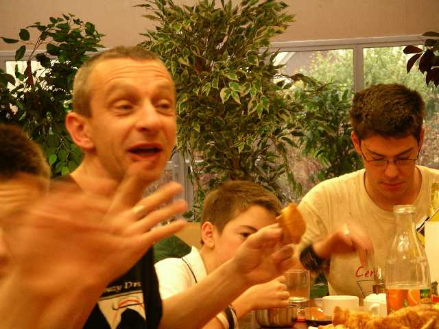
Mais le petit déj avec chocolat, croissants, jus de fruits, etc. finit par remettre tout le monde sur pied !

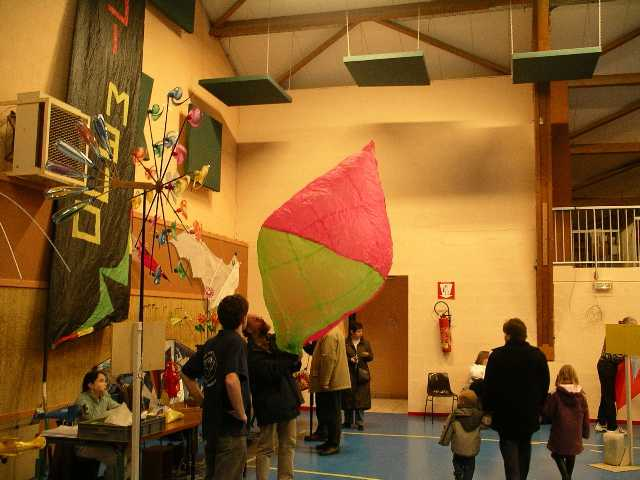
Mais retour dans le gymnase... Bruno est arrivé et il lance sa montgolfière en papier chauffée au pistolet thermique...

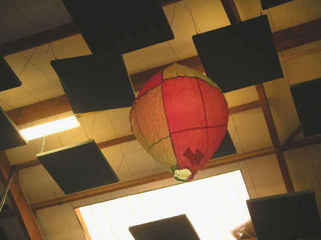
Et ça monte bien, jusqu'au plafond (du gymnase) !

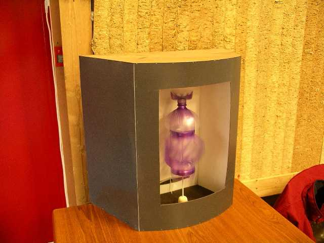
Il y a même des jardins de le vent sans vent ! Alors Jean-Claude a monté une soufflerie qui fait tourner ses moulins !

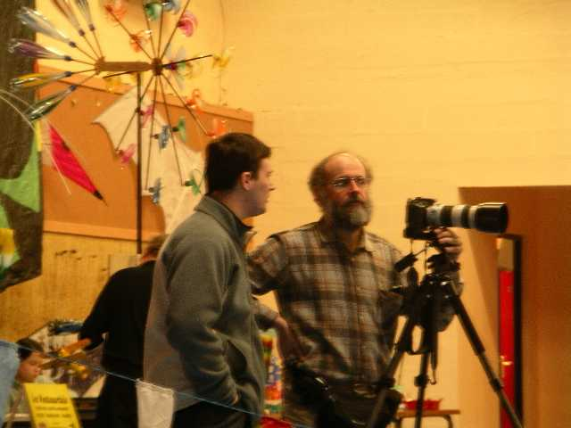
Bruno a amené son nouvel objectif qui fait de la super photo de qualité, pas comme la mienne !

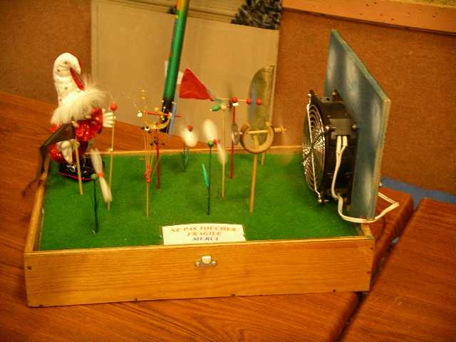
Il a aussi installé sa micro-soufflerie pour un micro jardin !

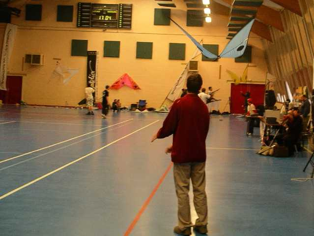
Alain a fabriqué des papillons modifiés, beaucoup plus grands (de l'ordre du mètre), avec des raidisseurs faisant office d'antennes. Ils marchent super-bien en indoor, et on ne s'en lasse pas...

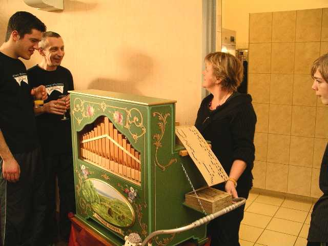
A midi, repas de nouveau, mais je ne vais pas vous montrer que ça. Une des dames du gymnase a amené son limonaire sur lequel elle va jouer "Le Dénicheur" et des chansons de Piaf...

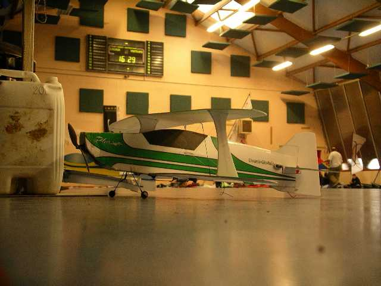
Les maquettistes d'avion seront aussi de la fête...

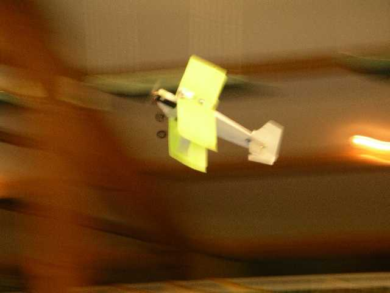
Ils arrivent à passer toute la voltige dans les limites du gymnase, même en volant à plusieurs ensemble. C'est dire la qualité des avions, et celle des pilotes !

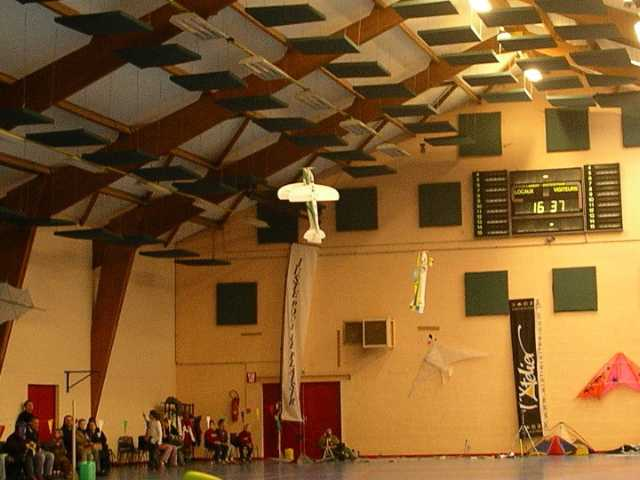
Le rapport puissance/ poids est suffisant pour faire du stationnaire (quand on est fort), toucher le sol et repartir (quand on est très fort) !

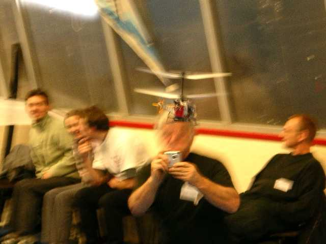
Il y aura même un hélico, genre Alouette 2, mais birotor, d'une impressionnante stabilité.

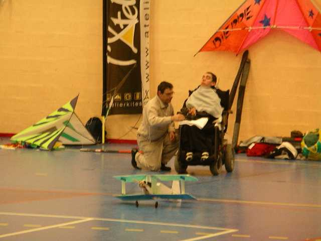
L'avion au sol, peu de temps avant sa destruction sous la houlette d'un aviateur en fauteuil électrique, qui en fait pourtant 3 heures par semaine, mais a mal apprécié la hauteur du plafond !

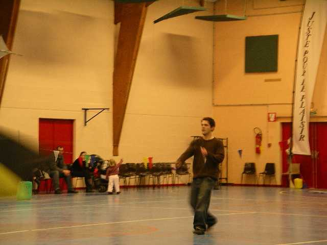
Mais les compétitions ne sont pas finies, Greg, enfin levé, présente son ballet en quatre lignes...

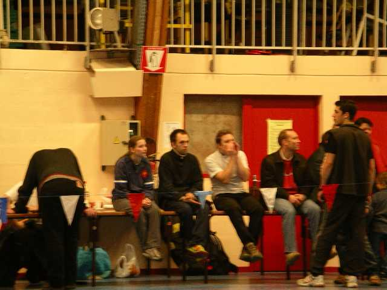
Les autres concurrents, K2000, Drôle d'oiseau, Damien, etc attendent leur tour et ne se privent pas de critiquer (ou d'applaudir, faut être honnête) !

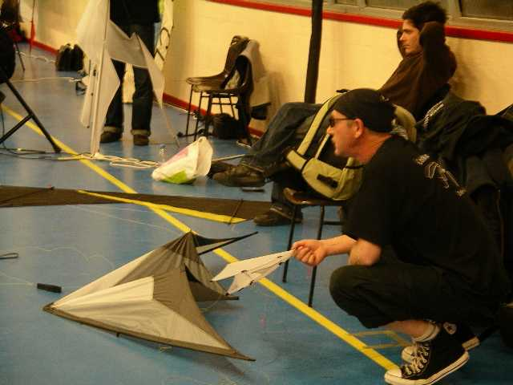
Helmut est venu d'Allemagne, avec ses minis deltas qu'il pilote d'une main à une vitesse incroyable. Il fera la compète avec, mais aussi un show spectaculaire

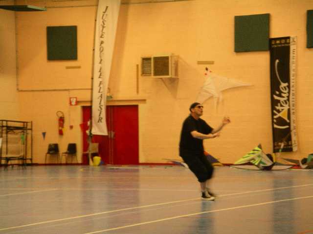
Son show est très rythmé, et à un rythme plus que frénétique, il dans autant qu'il pilote et en sort épuisé !

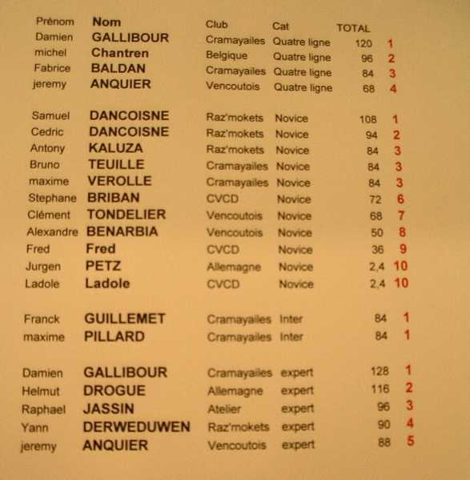
Pour les spécialistes, le classement final avec tous les noms. Ensuite, distribution des prix, tirage des loteries, et à une prochaine fois. La formule sur 2 jours est vraiment très bonne, la compétition a lieu mais laisse la place à beaucoup de fun et la soirée crée une ambiance mémorable. Merci, et à reconduire, SVP !